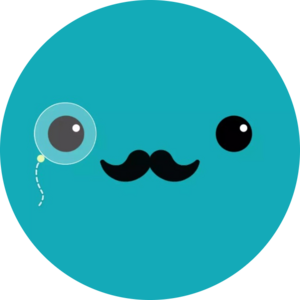

Otobüsler
--:--:--
Durak Düzenle
✕
Yeni Durak Ekle
+ Ekle
Uygulama Bilgileri
✕
Sürüm
Yükleniyor...
Uygulama
EGO Otobüs Takip
Güncelleme Durumu
Kontrol ediliyor...
Yeni Sürüm
-
İndirme
0%
Son Kontrol
-
Güncelleme Kontrol Et
Güncellemeyi Yükle
Ayarlar
✕
Veri Ayarları
Kaybolma Eşiği
Otobüs kaç çekişte görünmezse silinsin
Çekim Arası Bekleme (ms)
Her buton tıklaması arasındaki bekleme
Görünüm
Mouse Gizleme Süresi (sn)
Hareketsizlik sonrası mouse gizlenir